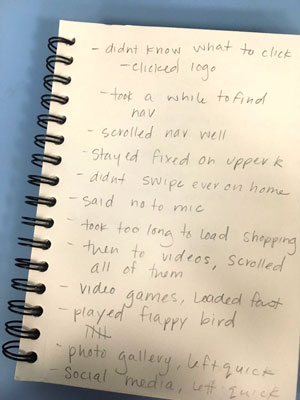
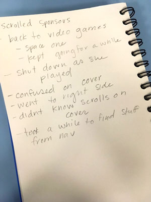

Needfinding
- needs to have an easy to find navigation
- needs to lead immediately with non lag
- needs to condense info into bullets or simple sentences
- needs to incorporate "back to top" links
- needs to have a clear idea of what to click first on the home page
- needs to have text with icon links so users know what they're doing
- needs to have arrows directing a scroll motion if one is available
- needs to have less options on nav bar, 3-4 pages max
- needs to not crash in the middle of use
- needs to be colorful and friendly
- needs to scroll up and down smoothly and controlled

